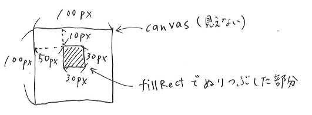
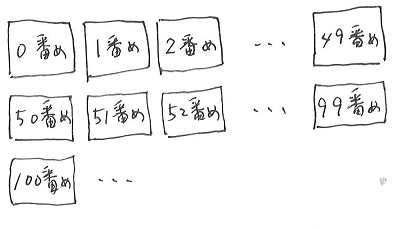

第8回の目標：プログラミングを通して画像処理の概念を学ぶ
画像データの保持の仕方としてラスタ形式とベクタ形式がある。
ラスタ形式は画像を点(画素)の集まりとして表現する。写真のような画像に適している。
ベクタ形式は画像を数式や座標で表現する。設計図やロゴのデザインなどに適している。
今回はラスタ形式を扱うが、特定のファイルフォーマットで実装する話でなく、概念的な話である。
四角形の描画は以下のように行う。
HTML
～省略～ <canvas id="ID1248" width="100" height="100"></canvas> ～省略～
javascript
let canvas, context;
canvas = document.getElementById('ID1248');
context = canvas.getContext('2d');
context.fillStyle = "rgb(255, 255, 255)";
context.fillRect(50, 10, 30, 30);
描画された結果は以下である。
canvasは絵を書くキャンバスである。ここからコンテキストというものを介してfillRectの命令で描画をしている。
fillRectは長方形を塗りつぶす関数で、4つのパラメータを引き受ける。
fillStyleはその後のfillRectで塗りつぶす際の色を指定している。Red, Green, Blue の順に0～255で指定する。rgb(0,0,0)は黒、rgb(255,255,255)は白である。
図示するとこうなる。
例題1 四角形を塗りつぶせ。以下に(見えないが)ElementIdが"ID1249"である150×150のキャンバスがある。このキャンパスの好き位置に好きな大きさの四角形を塗れ。確認するボタンを押すとテキストエリアの命令が実行される。
小さな四角形を並べて、絵を書くことを考える。
上は10pxの四角形を横に10個並べて描画したものである。なお、その際、色を少しずつ変えている。
このような処理を簡単にするために、描画用の関数を用意する。
function fillSquare(x, y, r, g, b, context) {
context.fillStyle = "rgb(" + String(r) + "," + String(g) + "," + String(b) + ")";
context.fillRect(x, y, 10, 10);
}
fillSquare関数は6つのパラメータを引き受ける。
fillSquareをパラメータを少しずつ変え、くりかえし呼ぶことで上記の描画をしている。
for (i = 0; i < 10; i++) {
fillSquare(10 * i, 0, 20 * i, 0, 20 * i, context);
}
例題2 fillSquareをくりかえし呼ぶことで描画せよ。以下にElementIdが"ID1251"である100×10のキャンバスがある。確認するボタンを押すとテキストエリアの命令が実行される。
上では、小さな四角形を横に並べた。プログラムとしてはfor文を用いて、キャンバスの左端からの距離(つまりx座標!)をずらしながら、繰り返し正方形を描画したわけである。
画像を表示するためには、横だけでなく、縦にも正方形を並べる必要がある。このようなときに便利なのが2重ループである。
2重ループはfor文の中でfor文を使うだけであり、以下のように書く。
let i, j;
for (j = 0; j < 10; j++) {
for (i = 0; i < 10; i++) {
fillSquare(10 * i, 10 * j, 0, 0, 0, context);
}
}
上のように、10px×10pxの黒い正方形を縦横に10個ずつ並んで描画される。
2重ループではループカウンタを2つ使う。iはキャンバスの左端からの距離(x座標)を10pxずつずらすために、jはキャンバスの上端からの距離(y座標)を10pxずつずらすため使用している。
つまり、内側のforで横一列が描画され、外側のforでそれを繰り返すことにより、面を描画している。
さて、ここまで小さな正方形を並べて絵を描く準備をしてきた。いよいよ画像を表示してみよう。
gazoData変数には配列のデータが保存されている。この配列の各データは0または1である。0であれば白の四角を、1であれば黒の四角を描画するとする。
上の図のように、配列に格納されている値に応じた、白または黒の四角を横に順に50個ずつ並べていくと画像が現れるこどが分かるだろう。配列のサイズ的に、縦にも50個並べればよい。
例題3 gazoData変数に保存されているデータ、上のルールに従って画像として表示せよ。以下にElementIdが"ID1252"である500×500のキャンバスがある。
例題4 colorData変数に保存されているデータを画像として表示せよ。colorDataは配列であり、0は白、1は赤、2は緑、3は青とする。また、横に40個、縦に40個の四角を並べるとする。以下にElementIdが"ID1253"である400×400のキャンバスがある。